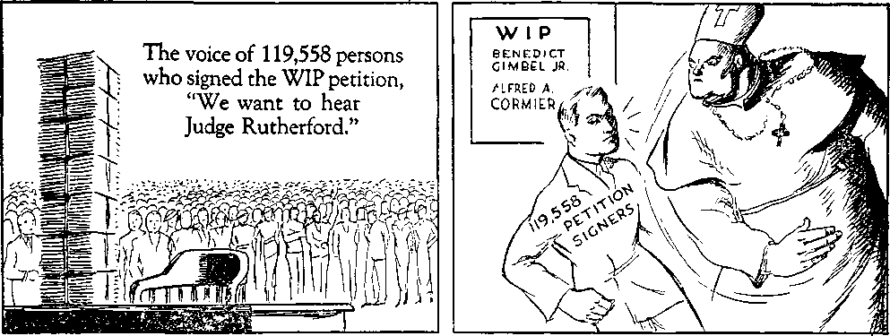
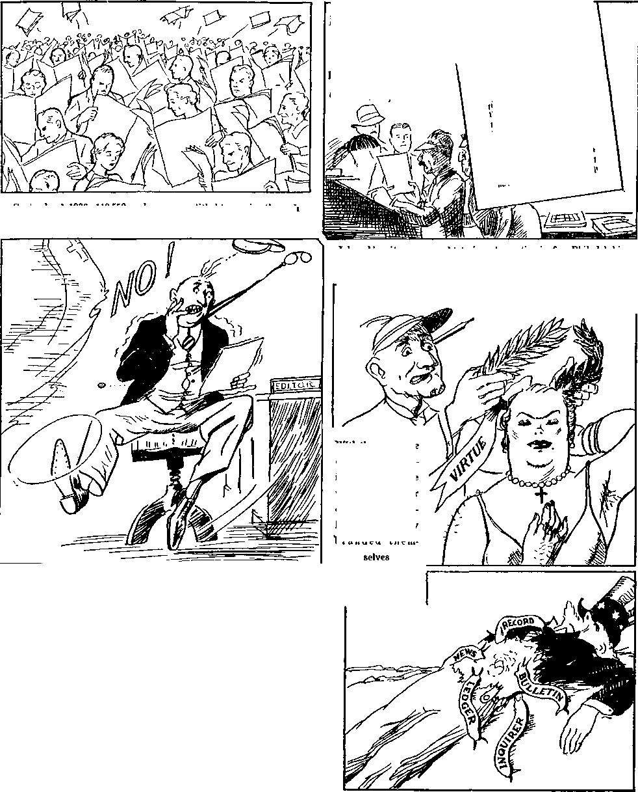
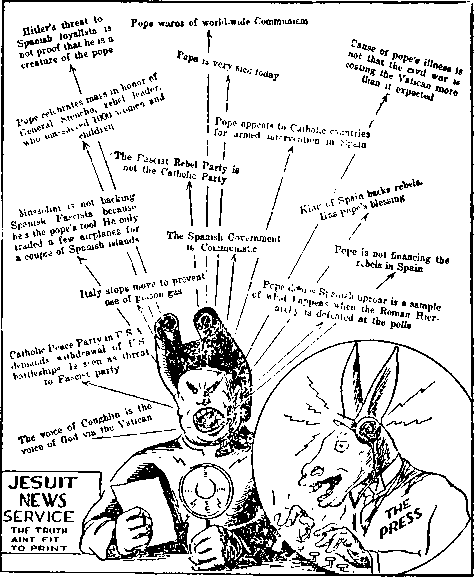

A JOURNAL OF FACT HOPE AND COURAGE
lllllllllllllllllllllllllllllllllilllillllllllllllllllllfllllllllllllllfllllilli
in this issue
HOPE FOR THE NATIONS
ASSEMBLY OF KINGDOM PUBLISHERS
SITTING ON
THE SAFETY VALVE
THE JESUIT-FASCIST REVOLT IN SPAIN
THE PERSECUTIONS OF JEHOVAH’S WITNESSES IN GERMANY
lllllllilllllllHIIIIIIIIIIIIIilllllllllllllllllllllllllllllllllllllllllllllllll
every other WEDNES DAY five cents a copy one dollar a year Canada & Foreign 1.25
Vol. XVIII-No. 445
October 7, 1936
.»aXQ• ■ ■ - I- ■■ !■ ■ ■■ ■■ - ■ • gVo*•
• • o<G). , ■ • ••
|
Hope for the Nations |
3 |
Fascism’s Croat Lie |
20 |
|
Opposition |
5 |
Systematic Vandalism |
21 |
|
When |
7 |
The “Church’’ in Arms |
22 |
|
Assembly of Kingdom Publishers |
Priests Fighting |
23 | |
|
in Newark. N.J., October 16-18 |
9 |
‘Pity the Poor Clergy’ |
21 |
|
Sitting on the Safety Valve |
10 |
The Persecutions of Jehovah's | |
|
Public Notice |
10 |
WITNESSES IN GERMANY |
27 |
|
Pope's Creatures Set Their Faces |
Hitler Greetings |
27 | |
|
Against Righteousness |
12 |
Elections |
27 |
|
The Parochial Cowardice of |
Arrests and Ill Treatments |
28 | |
|
the Newspapers |
13 |
Concentration Camps |
28 |
|
The Next Issue |
16 |
Slanders |
29 |
|
The Jesuit-Fascist Revolt |
Deaths |
29 | |
|
in Spain |
17 |
Sterilizations |
30 |
|
Fascism International |
19 |
Sufferings of Children |
30 |
• •qXq)* ................... 1 '■ - ...... -------------
Published every other Wednesday by
GOLDEN AGE PUBLISHING COMPANY, INC.
117 Adams Street, Brooklyn, N. Y., U. S. A.
Clayton J. Woodworth President Nathan H. Knorr Vice President
Charles E. Wagner Secretary and Treasurer
FIVE CENTS A COPY
$1 a year, United States; $1.25 to Canada and all other countries.
Notice to Subscribers
Remittances : For your own safety, remit by postal or express money order. When coin or currency is lost in the ordinary mails, there is no redress. Remittances from countries other than those named below may be made to the Brooklyn office, but only by international postal money order.
Receipt of a new or renewal subscription will be acknowledged only when requested. Notice of expiration is sent with the journal one month before subscription expires. Please renew promptly to avoid loss of copies.
Send change of address direct to us rather than to the post office. Your request should reach us at least two weeks before the date of issue with which it is to take effect. Send your old as well as the new address. Copies will not be forwarded by the post office to your new address unless extra postage is provided by you.
Published also in Bohemian, Danish, Dutch, Finnish, French, German, Greek, Japanese, Norwegian, Polish, Spanish, Swedish.
British Canadian-Australasian South African
Entered as second-class
Offices for Other Countries
34 Craven Terrace, London, W. 2, England
40 Irwin Avenue, Toronto 5. Ontario, Canada
7 Beresford Road. Strathfield, N. S. W., Australia Boston House, Cape Town, South Africa matter at Brooklyn, N. Y., under the Act of March 3, 1879.
Volume XVIII Brooklyn, N.Y., Wednesday, October 7, 1936 Number 445
Hope for the Nations
Broadcast by Judge Rutherford, Radio Lyon, August 30, 1936
GOOD people in all the nations of the earth hate strife, war and bloodshed. They desire peace, justice, honesty and truth. But in every nation wrongdoing prevails. As a result, in every nation on earth there is much perplexity and distress. The question constantly arises: Is there hope that lasting peace and prosperity may be yet enjoyed by the people? Men have suggested many remedies to right the unhappy condition of earth, but all such suggested remedies have failed. Shall all hope be abandoned? The correct answer is, No! There is hope for the nations, and a remedy for all distress and perplexity ; and about this I desire to tell you now.
the publications which
Be assured that I am not asking you to join anything. I am speaking in behalf of no earthly organization, but speaking only for your information. The time has come when the people must be warned of the great danger that surrounds them, and they must be told of the only way of relief, and when that information is received each one must determine for himself what course he will take. The true and only correct answer to the question propounded is found in the Holy Scriptures, and the Scriptures I cite in support and proof of my argument.
The Almighty God, the Creator of heaven and earth and whose name alone is Jehovah, is the Author of truth, and His Word is the truth. His Son, Christ Jesus, is the great exponent of the truth, and the Executive Officer of the Most High. He is the great Servant of Jehovah God, and in Him centers the hope of the nations.
Pointing to Christ Jesus, the Almighty God says to the people, as it is written in the prophecy: 'Behold my servant, whom I have chosen, my beloved, in whom my soul is well pleased. He shall show justice to the nations, and in His name shall the nations hope.’ (Matthew 12:18-21, A.R.V.; Isaiah 42:1-3) The nations and people that would have peace and prosperity must give heed to those words of the Almighty God. There is no other hope. In brief I call your attention to these great truths, which are set forth in detail in
you can obtain by addressing me in care of this radio station.
Jehovah God created the earth for man and man for the earth, and it is the will of God that obedient men shall find on earth everlasting life in contentment and happiness. God placed His creature Lucifer as man’s overlord, and it was the duty of Lucifer to remain faithful to God. Lucifer rebelled because of his covetous desire to receive the honor to which God alone is entitled. Then God changed his name, and since he has been known as Satan, that old Serpent,
the Devil, and from that time onward he has been the great enemy of God and of man, deceiving and misleading men and opposing Jehovah God. The Devil led man into wrongdoing, which resulted in death, which condition of death all the human race inherited. Then he challenged God to put on earth a man that would remain true and faithful to Jehovah God. The Devil set about to turn all creation against Jehovah God. That was long centuries ago. Jehovah God is supreme and could have destroyed the Devil immediately, but it pleased Him to afford the Devil the opportunity to prove his boastful challenge, that all creation might have full opportunity to see who is supreme, and to afford man full and free opportunity to follow the Devil or to obey God and live. Therefore Jehovah God said to the Devil in answer to his challenge : ‘For this cause have I permitted thee to remain, that I may show thee my power and that my name may be declared throughout all the earth.’ (Exodus 9:16) The Devil raised the question of supremacy, and Jehovah has afforded him all opportunity to prove his challenge ; but the time must come when the question will be settled once and for all.
For centuries the controversy has gone on and Satan has filled the earth with violence, turning men into all avenues of wickedness. Now we are on the earth at the time when Satan’s freedom of action has come to an end and when the great question of supremacy for world control must be settled for ever, and that day of settlement is at hand. Long ago Jehovah God made promise that He would establish in due time a righteous government amongst men, with Christ Jesus as the chief and ruling power. That promise of Jehovah God is certain to be fulfilled in due time, because Jehovah says: ‘I have purposed it, I will also do it. My word shall not return unto me void, but it shall accomplish my purpose.’ (Isaiah 46:11; 55:11) No man or company of men can possibly set up and maintain a righteous government, for the reason that all men are imperfect and all moved by selfishness. Jehovah God can and will set up and maintain a righteous government, with Christ Jesus as the Head thereof. Concerning that it is recorded in the prophecies at Isaiah 9:6: ‘The government shall be upon His [Christ Jesus’] shoulder; His name shall be called Wonderful Counsellor, The mighty God, The everlasting Father, The Prince of Peace, and of His government and peace there shall be no end.’ And furthermore is the declaration: ‘He shall rule in righteousness.’ (Isaiah 32:1) In that government under Christ Jesus shall the nations hope. There is no other means of gaining life and the blessings that go with endless life.
Nineteen hundred years ago God sent Jesus to earth to proclaim the truth and to redeem mankind from death, and by His full obedience to God’s will even unto death that work was accomplished by Him. God gave His word of promise that in due time Satan would be ousted and his organization destroyed and that He would send Christ Jesus to rule the world in righteousness. Jesus submitted the positive proof by which it may be determined when that time of ousting Satan should arrive and when Satan’s uninterrupted rule would come to an end, and He testified that the first evidence thereof would be the World War. That war came in 1914, and now the world is rapidly moving on to the point where the Devil and his rule of the world will be completely and for ever destroyed by Christ Jesus, the world’s righteous and true Ruler. That final conflict between the unseen powers is designated in the Scriptures as the battle of the great day of God Almighty. In that battle Satan and his organization will be completely destroyed and the earth will be cleansed of wickedness. You have often wondered why there is so much sorrow and woe in all the nations of the earth, and why those woes have so greatly increased since the World War. The Scriptures, at Revelation twelve, answer that question in these words: ‘Woe unto the inhabitants of the earth, because Satan the Devil is come down to you with great wrath, knowing that he hath but a short time,’ that is, a short time before the final battle of Armageddon. (Verse 12) It is Satan the Devil, who exercises cruel and wicked influence upon men, that is the cause of all the woes and distress that now afflict the peoples of the nations of the earth. The only remedy for such woes, and the only hope for the people, is by and through Christ Jesus, who will eliminate wrongdoing, to be followed immediately by His righteous government in all the earth. Before that final conflict shall take place, however, in which the supremacy of Jehovah will be made known to all as He has promised, the name of Jehovah God must be declared throughout all the earth; and this is done by making the people acquainted with the Word of
God, which is in the Scriptures. That is the only reason why I am speaking to you today, that your attention may be directed to God’s Word and that you may be warned of the impending crisis and of the only possible way that leads to peace and endless happiness. It is at once apparent to all reasonable persons that Satan the Devil and his earthly agents would try in every possible way to prevent the truth from being told to the people, and that in order that the people might be held in ignorance and that the Devil may plunge all mankind into destruction and thus prove his boastful challenge long ago made to Jehovah God. For this reason there is now great opposition to the proclamation of the truth.
OPPOSITION
Call to mind now the methods employed to oppose God and the proclamation of His message of truth. It is the duty of every intelligent creature to worship and serve the Creator, the Most High God. In order to oppose God in this and to turn the people away from the true worship of Almighty God, early in the history of man Satan organized a religion, placing the man Nimrod as his chief visible representative, and directed the people to praise and worship the creature in the place of the almighty Creator. Thus the people were blinded and turned away from God. Thereafter many religions were brought into action, and by such Jehovah God’s name has been defamed. Jehovah God organized the people of one nation and made a covenant with them, giving to them His righteous law, and commanded them that they must obey and worship Him alone and have nothing to do with the heathen religions practiced by the nations round about. That covenant nation, called Israel, became unfaithful to God, adopted a heathen religion, turned away from the true worship of Almighty God, and worshiped that which the Devil created; and for that reason God in His due time completely destroyed the nation of Israel. Before destroying that nation Jehovah sent Jesus to warn them, to testify to them the truth, and to give them opportunity to turn to the true worship of Almighty God. Only a few persons of that nation heeded the warning, and the others were destroyed. What resulted to that nation by reason of its wrongful course of action prophetically foretold what now is about to be inflicted upon the nations and peoples of the earth that claim to worship God but who in fact blaspheme His name. This specifically applies to those nations called ‘■Christendom”.
There is a wide distinction between religion and Christianity. There are many religions. There is but one Christianity, of which Christ Jesus is the author and beginner. When on earth Jesus made the clear distinction between religion and Christianity. The Pharisees, who were the clergy of that day, had turned away from the commandments of God and were following the traditions or teachings of men. They came to Jesus and said to Him: ‘Why do thy disciples transgress the traditions of the fathers? Jesus answered them and said, Why do ye transgress the commandments of God by your traditions? Thus ye have made the commandment of God of none effect by your traditions. Ye hypocrites! Ye draw near unto God with your mouth, but your heart is far removed from Him.’—Matthew 15: 2-8.
Paul was a religionist until he was converted to Christianity, and thereafter he served God and Christ Jesus. (Galatians 1:13-16) Paul persecuted Christians while he was a religionist. He was never persecuted until he became a true Christian. Then it "was that the religionists, the clergy that practiced the Jews’ religion, persecuted Paul. It was that same religious element that persecuted Jesus unto His death. And it was Jesus who told those clergymen or practitioners of religion that they were the sons of the Devil, and thus is proved that the Devil is the author of religion, which he has caused to be practiced for the very purpose of turning the people away from Jehovah God. Christ Jesus is the author of Christianity, and He taught the people to worship Jehovah God in truth and in spirit.
Then Jesus plainly declared to His followers that every Christian would be persecuted by the religionists, and persecuted because of his faithfulness in declaring the truth of God’s Word, because the Devil hates the truth and induces men to oppose the truth, because the truth exposes wicked schemes. (John 15:19,20) Now I call your attention to some well-known facts showing that Jehovah’s witnesses, the true followers of Christ Jesus, are today being cruelly persecuted in many parts of the earth, and their persecution in every place is by a religious organization.
Long centuries ago Jehovah God foretold that a mighty religious organization would arise in the earth, which organization would claim to be Christian, and which religious organization not only would oppose God but would persecute the true followers of Christ Jesus, who are Christians. By His prophecies He foretold that such religious organization would become commercial and political as well as religious; that it would practice a form of godliness, while at the same time the men operating it would in truth and in fact represent the Devil. If the well-known facts amongst the people today clearly identify such a religious organization, then you must know that that organization is of the Devil, regardless of what it claims, and that if the people would receive God’s favor they must flee from that organization and seek refuge in the Lord Jesus Christ, and worship God and Christ Jesus in spirit and in truth, according to the commandment of the Lord.
It is not my purpose to ridicule anyone because of his faith or belief. I point out the facts well known and set them alongside the Holy Scriptures, and then you may determine whether you will accept the Word of God or will follow the traditions of men. The question for determination in the mind of each one is, Shall I yield to the influence of men or shall I seek knowledge and wisdom at the mouth of the Lord God? About sixteen centuries ago there arose a religious organization in Europe, which organization assumed the name of Christ Jesus and called itself “the church”, practicing what it called the “Christian religion”, whereas in truth and in fact there is no such thing as the “Christian religion”. Christianity and religion are diametrically opposed one to the other. That religious organization has grown very powerful in the earth both commercially and politically. The men that operate it have extracted from the common people billions of money and used the same for wrongful purposes. That organization has invaded the politics of every nation of earth and attempted to gain control of all the offices in every department of the governments. It has amassed a tremendous amount of property. It has practiced and continues to practice formalism or religion and has turned the most of the people away from God and His Word and kept them in ignorance of man’s true relationship to the Creator. That organization is governed by a few men that operate it from Vatican City, Rome, and it maintains its agents in every country of the world. That ruling body of men calls itself the “Roman Catholic Hierarchy” or “the Catholic Church”. The millions of good, honest people who have been induced to support that religious organization are not members of the Catholic church, but are called “Catholic population”. These millions of people called the “Catholic population” are sincere and have been misled by the Hierarchy and induced to take a course that is contrary to God’s commandments. The endeavor of the ruling Hierarchy has always been to keep the people in ignorance of the Holy Scriptures, to prevent them from studying the Bible or anything that explains the Scriptures, and has induced and compelled the people to follow the teachings or traditions of men. Thus the good, sincere people have been caused to make the commandments of God of none effect by the traditions of men. These honest people of the Catholic population are not to be ridiculed because of their faith, but they are to be helped to understand the truth of God’s Word. My purpose and duty, according to the commandment of God, is to warn you of Jehovah’s purpose to destroy that and all other hypocritical religious organizations, and to call your attention to the Scriptures, which declare that the only way for the people to obtain life, peace and happiness is by and through Christ Jesus and His kingdom.
The powerful religious organization, the Hierarchy, just mentioned, has extracted from the pockets of the people vast sums of material wealth by means of its false traditions or teachings. By secret practices and subtlety it has gained control of many of the political offices in the nations of the earth. It is imbued with the ambitious idea that it must have control of the world. To accomplish its purpose it has carried on a cruel inquisition, fomented strife and war, and has caused the people to suffer much distress and great perplexity. In the light of the Scriptures, then, it clearly appears that that organization is the instrument of Satan. It is the real power in the earth that rules many nations today, particularly the nation of Germany, which has brought so much woe upon many people in recent months. It is the real power that fomented and is now carrying on a revolution in Spain to again gain control of that people. The public press only a few days ago published the fact that the cathedrals of that organization in Spain have been made the receptacles of great wealth and in them are found millions of money and bonds stored up, and also many guns, ammunition and other instruments of destruction. Only a few days ago one of the cathedrals of that organization in Switzerland was burned to the ground, and it was discovered that the fire was ignited by the spontaneous combustion of ammunition stored in that cathedral. Such things could not have been put there for the purpose of teaching the people the words of the Prince of Peace, Christ Jesus, but the so-called “churches” have been made arsenals as well as strong boxes for money for the very purpose of gaining power and enforcing the desire of a few selfish men in their desperate attempt to gain control of all the nations of the earth. Their real purpose is to rule the earth with a cruel hand by ruthless dictators. I sound the warning to the people of the nations of Europe and of the whole world against that ruthless and deceitful religious organization that operates in the name of Christ but does violence to the name of God and Christ. I sound the warning from God's Word to all men who desire to
receive the blessings of Almighty God that they must turn away from the teachings of wicked and selfish men and turn themselves wholly unto God and to Christ Jesus. In Christ Jesus and His kingdom alone is there hope for the nations of the earth. His kingdom is the true and only remedy for mankind to rid themselves of unrighteousness and oppression and to find life and personal happiness.
WHEN
God’s kingdom is at the door, and for that reason the great crisis is upon the world. Already His King, invisible to human eyes, has assumed His authority and His office as King. For centuries true Christians have prayed, as Jesus taught them to pray: ‘Thy kingdom come; thy will be done on earth as in heaven’; and now that prayer is about to be fully realized. Jehovah God stopped the World War in 1918, as shown by the Scriptures, because His King had come, whom He had enthroned, and the time was at hand for the beginning of the ousting of the wicked and for the operation of the government of righteousness. But before this is fully accomplished the testimony must be given to the people. The great battle of God Almighty will demonstrate to all creation that God is the Almighty, whose name alone is Jehovah; and because that battle is near at hand and because God would have the people notified and warned before it takes place, He commands (at Matthew 24:14): "And this gospel of the kingdom shall be preached in all the world for a witness unto all nations: and then shall the end come.” In obedience to that commandment men and women are going forth proclaiming to the people the good news of the kingdom of God under Christ Jesus. The Lord declares that when this testimony is completed then there shall immediately follow the greatest tribulation ever known and which is the battle of Armageddon, and which will completely wipe out unrighteousness and establish instead thereof the rule of righteousness, everlasting peace, and endless joy. Then the people will realize the prayer they have uttered for the coming of God’s kingdom that His will might be done on earth.
the Scaffold
The giving of such testimony as God commands is now progressing in the earth, and He sends forth the true followers of Christ Jesus, who are in fact Christians, and to them He says: “Ye are my witnesses . . . that I am God.” You must declare my name to the peoples and give warning of the impending crisis. (Isaiah 43:10-12) The witnesses of Jehovah, who declare His kingdom, are opposed in every j': r; of the earth by religionists. They are wrongfully arrested, imprisoned, and some of them killed, not because of wrongdoing, but because they tell the truth concerning Satan and his organization. Such persecution of the followers of Christ Jesus with fiendish cruelty has been made manifest particularly in the countries of Germany, Austria, Italy, Quebec, Australia, and America, and other places. Have you heard of any religionists being persecuted for righteousness’ sake? You have not, because they are not persecuted. Why are Jehovah’s witnesses being persecuted and caused to suffer? Jesus answered that question when He said to them: “Ye shall be hated of all nations for my name’s sake,” because you are My true followers and declare My kingdom. Who are the men that are inciting and carrying on the persecution of Jehovah’s witnesses, who tell the truth concerning the kingdom? It is the same class of men that persecuted Christ Jesus and His apostles. It is the Catholic Hierarchy religionists, who have always indulged in persecuting those who declare God’s name and His truth. This is exactly in fulfillment of the prophetic utterances of Christ Jesus that all His true followers would suffer persecution at the hands of religionists, and therefore Jehovah’s witnesses are neither surprised nor disappointed by reason of this persecution. They will continue to try to get the truth to you for your benefit and to the honor of Jehovah’s name.
The witnesses of Jehovah are wrongfully accused of being in league with the Jews and with communists and with others attempting to set up the rule of the world. Those charges are wholly false. Jehovah’s witnesses have no interest in the political affairs of this world. They are not trying to set up any kind of government. Their only commission is to declare to the people the truth and to warn them, as God has commanded, that the day of final reckoning by Him is at hand. You who have heard the message of God’s Word have been warned, and it is your responsibility to choose whether you will continue to heed the teachings of men, or will give heed to the Word of Almighty God and take your stand on the side of God and Christ Jesus, His King, and obey His Word. Having been warned, what will be the result? Jehovah answers through His prophet Ezekiel, at the thirty-third chapter, that those who have been warned and who refuse to give heed to that warning shall at Armageddon die with all the wicked ones of Satan, and that those who give heed to the warning of God’s Word, and who turn to Jehovah God and Christ Jesus and seek meekness and righteousness, shall live. ‘Therefore choose ye this day whom ye will serve.’
The Scriptures show that the great majority will go down in the battle of Armageddon, and also that those who give heed to the warning of God, and who take their stand on the side of Jehovah and His King and continue in meekness and righteousness, shall be shielded, protected and carried safely through the great battle. Here I quote the words of Jehovah’s prophet concerning His purpose toward the wicked of the world, and which words are recorded at Zephaniah 3:8: “Therefore wait ye upon me, saith the Lord, until the day that I rise up to the prey; for my determination is to gather the nations, that I may assemble the kingdoms, to pour upon them mine indignation, even all my fierce anger: for all the earth shall be devoured with the fire of my jealousy.” Then to those who desire to serve God and Christ Jesus in spirit and in truth He says through His same prophet these words (Zephaniah 2:1-3): “Gather yourselves together, yea, gather together, O nation not desired: before the decree bring forth, before the day pass as the chaff, before the fierce anger of the Lord come upon you, before the day of the Lord’s anger come upon you. Seek ye the Lord, all ye meek of the earth, which have wrought his judgment; seek righteousness, seek meekness: it may be ye shall be hid in the day of the Lord’s anger.” You have been warned, and the course has been made plain, that you may choose which way you desire to go.
God’s declaration to the people at Psalm 145: 20 is: “The Lord preserveth all them that love him; but all the wicked will he destroy.” The responsibility rests upon each individual, therefore, to choose whether he will continue to align himself with selfish ones who teach and practice wickedness or will seek the righteous way of the Lord God and live.
God’s promise is that His government of righteousness shall bring to obedient mankind everlasting peace and that there shall never be another war amongst the nations. That promise should thrill the heart of every honest man and cause the millions of widows and orphans to dry their tears and lift up their heads and rejoice, because of the blessings that God’s kingdom will bring to them. You have observed that all the plans and schemes of men have failed. Now the Lord God points you to His Word and shows you the only true remedy and the only way that you can receive the blessings you desire. The responsibility is with each one to act, and by acting he does not join any earthly organization, but takes his stand on God’s side and lets it be known that he is for Jehovah God and His kingdom and that he will do right and righteousness toward God.
Jesus Christ declared: ‘This is life eternal, to know thee, the only true God, and Jesus Christ.’ (John 17:3) Nothing could be of such importance to the people now in this hour of great distress and perplexity as a knowledge of the truth that Jehovah is God, that Christ is King, that the Kingdom is at hand, and the day of deliverance is sure to those who serve God and Christ. To aid the people in gaining this knowledge the message of and concerning God’s kingdom, as set forth in the Scriptures, is published in simple form and in many languages, and is being distributed amongst the people for their aid, comfort and enlightenment. In this manner the name of Jehovah God is now being declared throughout all the earth, even as He long ago said it must be, before He destroys the wicked organizations. Jehovah’s witnesses will do no injury to any people. Their sole desire is to do good as God has commanded. In obedience to His commandments they are going about the earth putting the people in touch with the truth of and concerning God and His Kingdom under Christ. Whether you accept this message or not brings no profit to those who deliver you the message. The Lord God has graciously provided the opportunity for you to hear and to gain a knowledge of His Word and to deport yourselves accordingly. It is your privilege to take it or leave it. Be sure that you are not deceived by the sophistries of men in religious organizations. In this connection I quote the words of the apostle Paul uttered by him after he had ceased to be a religionist and when he was serving God in truth and in spirit (Colos-sians 2:8): “Beware lest any man spoil you through philosophy and vain deceit, after the tradition of men, after the rudiments of the world, and not after Christ.”
Jehovah’s Word, the Holy Scriptures, is the great treasure house of knowledge and wisdom. Let no man turn you away from gaining that knowledge. If you desire further information concerning God’s gracious provision for suffering humanity, you may address a letter to me in care of this station and I will put you in touch with such information. The League of Nations’ building at Geneva stands as a monument to man’s failure to establish peace and righteousness. Jehovah now says to all nations: ‘Behold my servant, Christ Jesus, the world’s rightful King. In His name shall the nations hope.’
What will be some of the blessings God under Christ will bring to the people? There will be no more war, because God has promised there never shall be another war after Armageddon. The millions now extracted from the people for war purposes will no longer be needed, but all material wealth of the earth will be used for peaceful and righteous purposes. There will be no more famine or suffering for the want of food, because God has promised that the earth shall yield its increase in abundance and that He will spread a feast for all that serve and obey Him. World distress and perplexity will cease for ever, and without fear the people will dwell together in contentment. Sickness will cease, because to the obedient ones God has promised that He will give health and strength. Gradually the peoples of earth will be lifted out of distress and will be granted life everlasting on earth. Then there shall be no more death, as it is written in the Scriptures, which I quote: ‘Christ Jesus shall reign until He has destroyed all man’s enemies, including death.’ (1 Corinthians 15: 25, 26) Again, said the Lord Jesus: ‘Behold, the dwellingplace of God is with men, and they shall be His people, and God himself shall be with them; and God shall wipe away all tears from their eyes, and there shall be no more death, neither sorrow nor crying, neither shall there be any more pain, for the former things have passed away.’ (Revelation 21: 3,4) God’s gracious kingdom under Christ will bring riches and blessings to obedient mankind beyond the fondest dreams. Let the people now take warning and turn their minds and hearts to Jehovah God and His King and give honor and glory to His great and wonderful name.
Kingdom Publishers
Take special notice of the announcement of the Newark, N. J., assembly of Kingdom publishers, page 14 of this issue..
ROMAN CATHOLIC officials have started something in Philadelphia which has become somewhat of a boomerang. When the Gimbel Brothers radio station WIP broadcast a lecture by Judge Rutherford which did not happen to please the Catholic “authorities” drastic action was threatened in the way of a boycott of the Gimbel Brothers store by all Catholics that could be influenced to submit to the high and mighty dictates of their masters. If Gim-bels had had a little more gumption and also a little independence it would have been interesting to see just how much of a boycott the Catholic Hierarchy could swing. But the merchants, valuing profit above principle, decided to do the craven thing and discontinued the broadcasts of Judge Rutherford’s talks.
But that was only the beginning. Listeners to Judge Rutherford’s talks decided that a petition to Gimbel Brothers would be in order and started to circulate one, with the result that 120,000 names were obtained, respectfully and without threats asking Gimbel Brothers to continue Judge Rutherford’s talks.
[Released at Philadelphia September 2, 1936, by Watch Tower Bible & Tract Society, J. F. Rutherford, President.]
Public Notice
is hereby given to and on behalf of the 119,558 signers that Benedict Gimbel, Jr., president of the Pennsylvania Broadcasting Company {Station WIP), was presented yesterday afternoon by attorneys for the Watch Tower
Bible & Tract Society with the following
PETITION
To Gimbel’s Radio Station WIP, Philadelphia:
The undersigned consistent listeners to your radio station have, for a long while, very much enjoyed your broadcasts, including speeches by Judge Rutherford in Watch Tower programs. Now we are informed that WIP no longer broadcasts those speeches because of strenuous protests to you by high officials of the Roman Catholic church, and that those protests are based upon the claim that Judge Rutherford ‘‘misrepresents the teachings of that church and. foments religious hatred and bigotry.”
Many believe that Judge Rutherford does not misrepresent the teachings of any organization. Since Catholic officials object, why not have their teachings discussed publicly and broadcast by WIP, Judge Rutherford taking one side, and some high Roman Catholic official the opposite side? Surely there is nothing of greater public interest, convenience and necessity than the teachings of the Bible concerning the salvation of humanity, as that is the question involved. Every fair-minded person is vitally interested. We therefore petition you and hope you will arrange for such public discussion and also continue Judge Rutherford’s broadcasts on WIP.
Above is facsimile of ad as set by The Evening Bulletin. Not a “news” paper in Philadelphia dared to print it.
The petition was delivered to Gimbel Brothers the afternoon of September 1, at four o’clock. A letter of transmittal written by the attorney of the Watch Tower accompanied the petition. There were upward of 6,666 sheets of names, making a pile about five feet high. The bearers of the petition were announced, but Benedict Gimbel, so eager to please the Hierarchy, declined to see the representatives of 120,000 Philadelphians of a more decent type. However, Mr. Gimbers secretary asked to be entrusted with the message, and, on being pointed to the pile of petitions, wilted and begged to be excused until she could consult Mr. Gimbel further. In a few minutes she returned and said she was authorized to accept the message and that she would have a porter carry it in. The porter arrived in a few moments and, picking up the entire pile, carried it into theprivate office.
A copy of Attorney McGaughey’s letter of transmittal having been provided by him for delivery to Mr. Cormier, general manager of WIP, the representatives of the petitioners next asked for an interview with that gentleman. Mr. Cormier’s attitude was reflected in his secretary’s refusal to even accept the letter. [Cormier is a Catholic, and revealed his subjection to the Hierarchy.] The letter was therefore turned over to the “receptionist” on duty, who was a little more civil. Attorney McGaughey's letter read as follows:
Mr. Benedict Gimbel Jr., Pres. Penna.
Broadcasting Co.
35 S. 9th Street, Phila. Pa.
Dear Sir:—
As attorney for the Watch Tower Bible & Tract Society, and further, in behalf of 119,558 listeners, I enclose sundry petitions, including my individually signed petition, reading as follows: [Here the text of the petition is set out in full. See PUBLIC NOTICE.]
For your earnest consideration, I submit that if the message Judge Rutherford is bringing to the peo-pie is true, then it is of the greatest importance to every intelligent person. If it is false, then it is the duty of the clergymen who so claim to come boldly forward and honorably tell the people wherein that message is false. The radio is the most useful means to thus serve the people, so they may hear and decide intelligently.
I might further state, that I have been of counsel for the Society since 1912, and whilst I am not an adherent, nevertheless am, in a large measure, familiar with their teachings and have no hesitancy in saying that the prayer of the petition should be granted and the broadcast privileges restored to the Society.
It did look, for a time, as if the Bulletin, alone of all the Philadelphia papers, did have some courage and common sense; but no!
Veiy truly yours, (Signed) H. M. McGaughey The messengers next called on the newspapers of Philadelphia with a public notice stating that the petition had been presented to Benedict Gimbel, Jr., president of the Pennsyl-vania Broadcasting Company. [See text herewith.] The reaction of the various newspapers to the perfectly proper public notice is of more than passing significance and interest. The fear of the foreign Roman Hier-archy, operating through pseudo-Americans, is manifest in the excuses given by Philadelphia papers for refusing to accept a public notice, even as an advertisement.
The Philadelphia Record said that controversial material involving the Roman Catholic Hierarchy was positively unacceptable. The Record only recently had been very nearly put out of business because it had published a candid and wholly sincere editorial in which it seemed to favor the Spanish government as against the rebels. Cardinal Dougherty had ordered a boycott of the paper, and the Record, preferring an ignoble life to a noble death, had reversed itself and henceforth became the puppet expressing the ideas of ventriloquist Dougherty.
The Inquirer, giving the public notice the once-over, firmly announced that it could not touch dynamite; and that was that.
The News accepted copy and set advertisement in type and then telephoned decision that after consulting attorneys it must refuse the notice.
The Ledger likewise set the advertisement in type and then decided that, after all, it could not publish anything •’controversial'’. Don’t laugh.
The Bulletin went so far as to set the advertisement and furnish proofs, stating that on receipt of corrected proofs, signed by an officer of the Watch Tower Bible & Tract Society, it would pass on the copy for publication.
The attitude of the newspapersmanifests that while representatives of the Hierarchy may go so far as to call the president of the United States a liar, and get plenty of publicity for themselves, nothing that even calls in question the tactics of that same Hierarchy can get a look-in. In the same connection it is of interest to note that news which is definitely unfavorable to other church organizations is not objected to by newspapers, but when the Roman Catholic organization is involved, it is a different matter. How long will the Hierarchy be able to bulldoze the public press ?
As an additional item of interest and significance mention is made of the fact that radio station WCAM, Camden, after agreeing to broadcast the public notice, thought differently after consulting the “Legal Department” and failed to carry out its agreement. And thus the channels of publicity, of greatest importance in a democracy, are being more and more brought under the direct or indirect control of a small priestly class whose every idea is directly contrary to the American conceptions of liberty and progress.
POPE’S CREATURES SET THEIR FACES AGAINST RIGHTEOUSNESS
They will be interested in the shabby reception accorded their wishes by the officials of WIP, who were ‘too busy” to acknowledge the
These 119,558 signers, that would make a line-up of 68 miles, will remember the extraordinary cruelty of Fascist justice, considering that if either official spent only a minute to interview each of the signers, it would take 249 eight-hour days.
physical proof of their listeners’ desires.
They will be interested to know that the carnal will of a prelate gets more consideration than the expressed desire of 119,558 radio listeners.

Jehovah will remember these men who sought to stand in the way of 119,558 truth-seekers. He will remember that they had it in their power to do good and refrained from doing it.
They will be quick to realize they have no rights a WIP official is bound to respect.
THE PAROCHIAL COWARDICE OF THE NEWSPAPERS
PUBLIC LEDGER '
PHILADELPH1A RECORD ©he inquirer
(nuttUDni' i.ui'iitviu1'
' -yaupnit
These creatures of a foreign power chose to tremble before the wicked demands of skirted Fascists, rather than serve honest people and honor God.
After receiving the copy, three of them setting it in type, each of the five refused to carry it
September 1,1936. 119,558 readers were entitled to receive through their daily papers information of great significance.
As the new defenders of the faithless, the cowardly converts to inquisitorial Catholicism and the mortal enemies of the public they claim to Serve.
DAILY S NEWS
©he ^Bulletin
Jehovah s witnesses sought to insert a notice m five Philadelphia dailies that the petition had been filed with WIP according to the wishes of the 119,558 signers thereof.
With the arrogance oi a pimp defending an incurable whore, and the fear of a frantic, bootlicking slave, they branded them-
When the Roman Hierarchy Was Defeated at the Polls
Portrait Painters Are Such Flatterers
A CONVENTION of Jehovah’s witnesses and associate Kingdom publishers is always an occasion of joy and great activity. It is, further, an occasion of praise and testimony on a large scale. Praise is rendered to God by showing forth the honor of His name and the grandeur of His purpose. Notice that a convention is being arranged for is always a cause for rejoicing and busy preparatory activities on the part of those publishers of the Kingdom gospel who have even the least idea that they may be able to attend the assembly.
A prominent feature of national or international conventions of Kingdom publishers is a lecture on a vital and timely subject by Judge Rutherford. This will also be the outstanding

His Eyes Are Perfect
Sold Again
feature of the convention to be held at Newark Armory, Newark, N. J., October 16 to 18 inclusive. The convention promises to be a memorable one, for New Jersey has been the scene of much persecution of Jehovah’s servants and it is appropriate that an outstanding witness should be given there.
Judge Rutherford’s lecture at Newark follows the completion of his tour of European countries, during which tour he has spoken in the largest public auditoriums to capacity audiences. At Glasgow, Scotland, London, England, Lucerne, Switzerland, and elsewhere he has delivered his lecture on “Armageddon”, the greatest battle of all time. This will also be the subject of his lecture at Newark Armory, a tremendous coliseum-like auditorium seating 15,000 persons, and accessible to a population of 1,250,000 within a radius of ten miles.
The lecture will be given wide publicity by means of handbills, placards, posters, banners, etc. The conventioners will make personal calls on the aforementioned 1,250,000 persons, and extend personal invitations to them to hear this lecture.
As to the convention, which will be, as it were,
2. Fascism—Catholic Action—The continual terrorism and uproar necessary to Catholic Hierarchy rule

Fascist troops loving the Loyalists with that “special love” admonished by their leader, Ambrose, while the Press dutifully reports the spiritual significance of it all
the setting of the lecture “Armageddon”, it is expected that 8,000 Kingdom publishers will be in attendance. Complete cafeteria arrangements will provide material food for this busy throng, while a diversified program will meet the desire for spiritual refreshment. The Sunday afternoon meeting at three o’clock, at which the lecture will be given, will be one of the great events in New Jersey's history.
GET THE IDEA—IT'S NOT THE POPE'S WAR—AND THE NEWS SHARKS GET IT, TOO.
The Next Issue
The next issue contains the incontrovertible evidence from the columns of the Baltimore Evening Sun, The Nation, the St. Louis Post Dispatch, the London News Chronicle and other reliable newspapers that every word in the accompanying article, “The Jesuitieal-Fascist Revolt in Spain,” is true. For obvious reasons there are no citations from any Philadelphia “news” paper.
3. Fascism—Catholic Action—The continual terrorism and uproar necessary to Catholic Hierarchy rule
TROUBLE had been brewing in Spain for a very long time, as even the most casual observer could discern. Ever since the republic was established, in 1931, the Roman Catholic church opposed and attacked it, both openly and, more especially, by all the underhand methods in which the Jesuits and Catholic Action are past masters; chief among which
Liiiiiiniiiiniiiiiiiiiiiiiiiiitiiiiiiiii>iiiiniiMiiiiiiniHiiiiiQiiitiiiiimtiiMiiiiii:fiiiiiiiiiiiiiii>iiiiiiiHiiiitniiiiiiiu>iuiiiHiie
| The writer, who has been in Spain for | | over six years and is conversant with con-
f ditions there, realizing that facts are
| what count in a subject of such contro-
| veisy as this, has not sought to produce
| a literary composition, but has deemed it
| of far more importance to present with-
| out Imis the opinion of the people as ex-
| pressed in the press of the country and
| culled from as great a variety of period-
| icals as possible; hence the numerous ver-
| batim extracts from the press of every
| sector of Spanish republicans: Independ-
| ents, Liberals, Socialists, Communists, 1 f and Anarchists.
Fm.iiiiiii.L tiiiiiiuiiiiiiiiuiiti iitiiiiniiiiiiiiiiHmuimiiiiiiiiN u।1uibiiiiiitGiiiiu.jiiHiioinitumiiii mu.........
lished divorce—a long and badly needed reform here, where women had legally a standing not much higher than that of cattle, being practically the personal property of the husband, just as much as, say, a dog or a horse might be. Why object to this being altered? Cemeteries were made nondenominational (i.e., nonCatholic, of course), and giv
were the press, the pulpit, Fascist and semiFascist organizations and an intensive campaign of lying propaganda.
The republic had really made a fine start, inspired by high ideals which it sought to put into practice. But it made one serious mistake: it treated its enemies with far too much leniency. It expected them to deal as fairly and honestly with it as it would have done with them had the positions been reversed. It abolished the press censorship; and that immediately opened the door for the Jesuit press to launch out on a campaign of slander against the government, distorting its words and actions.
The reform of the constitution brought about several badly needed improvements which, incidentally, deprived the church of many of its unfair privileges; hence its antagonism. The republic instituted lay schools for non-Catholics. Why not ? It made marriage a civil ceremony, without barring the possibility of anyone’s going to church as well if one wanted to. Wiry force non-Catholics to be wedded in church ? It estaben a laical character. Instances are on record till quite recently, a matter of only a few months ago, of burial being refused the dead for not having belonged to Ratti's superstition! And, of course, the church was separated from the state and the grants or subsidies from the state were abolished. If the church was to be kept up, let those who belonged to it maintain it! Now that was too much! Infringing upon the “sacred'’ rights of the “holy” church! So the cry went up for the protection of “Order, Family, Country, Religion and God”, pretending with their accustomed hypocrisy that these things were being assailed by those who really respected and protected them. The church here still had almost all the power it had in the Dark Ages, and meant to keep it; so these gangsters and anarchists in high places then conjured up the bogey of “Communism” to frighten the people back into their clutches.
Eventually Lerroux got into power. A word is worth mentioning about him. During the time of the monarchy, he had been a labor leader and violent agitator, always turning up in places where there was discontent and provoking conflicts which were promptly squashed. Ue himself always got away scot-free! If the king wanted to visit Barcelona, Lerroux would go ahead, make some violent speeches, create unrest, and the ringleaders would be shot or imprisoned. Then when things had quieted down again, the king could come along in safety.
4. Fascism—Catholic Action—The continual terrorism and uproar necessary to Catholic Hierarchy rule
17
It was Lerroux’ attempt in October 1934, when he was Arcine minister after being elected by the Republican Right Centre party, to introduce into the government the clerical leaders, rightly suspected by the people of being antagonistic to the republic, that brought about the revolution in Asturias. Lerroux was selling the people to the pope’s henchmen, and the people knew it. They were not willing to be fooled again, and so stood up to defend their liberty. Though they failed then, the frankly reactionary government was unable to maintain itself in power and, after repeated crises, fresh elections were held in February of this year, culminating in an overwhelming victory of the Popular Front, the Left Republican and Socialist parties obtaining most seats.
The right-wing elements had fully expected to win, and had everything ready for the establishment of Fascism on the German plan immediately after their victory: a black list of people to be got rid of or expelled from the country, a new constitution, etc.; everything down to the last detail. As an instance: It is usually taken for granted that a passport which has been visaed by the consul abroad of the country one is visiting is sufficient to vouch for one’s personality. But no! The police authorities (under the new arrangement put into force by the Lerroux-clerical government) required all foreigners to present a certificate from their consulate here to the effect that they were registered there. So your passport, plus the visa of the Spanish consul abroad, was not sufficient! It is perfectly obvious to any German why this further formality was tacked on: so that the German consuls might have the opportunity of confiscating the passports of any Germans who did not meet with their approval, so that they might persecute even here the many thousands who had been fortunate enough to escape from the Hitlerite hell. And it is known that in this way and by other tricks they have confiscated hundreds of passports from refugees, leaving them stranded here without any documents of identity.
Having failed in the elections, the reactionaries endeavored by all possible means to disrupt the Popular Front; first in parliament, where they failed; then by causing unrest and discontent, riots, assaults against persons and property, murder, etc. Soon after the elections a friend of the writer heard the secretary of the bishop (in Madrid) say: AVe've lost all along the front; there's only one thing left for us to do: bring about clashes in the streets.” This has always been their favorite weapon to discredit the government and make the people believe that it was unable to maintain order, and that only they, the reactionaries, the so-called '‘lovers’’ of "Order, Family, Country, etc.” were able to do so. Naturally, if they were the very ones who, often disguised and passing themselves off as Communists, etc., created the unrest! Their tactics have not varied since the burning of the Reichstag!
A few months ago a civil guard who had been killed in one of these street riots was buried and, as usually happened, the funeral was made the occasion for a huge political manifestation of the reactionaries and was attended by most of the leaders of the movement. Suddenly some shots were fired, presumably by some extremist, and the storm troops detailed to maintain order retaliated, killing one of the gangsters—and he happened to be the cousin of Primo de Rivera, the Fascist leader!
Time passed, till recently the lieutenant of these storm troops, who was the one who had fired the shot that killed Rivera’s cousin, was killed in retaliation by the Fascists.
On the next day (in the middle of July) Calvo Sotelo, the parliamentary leader of the Fascist party and whom they intended to make prime minister, was taken from his home and shot by a section of the storm troops. Two or three days later the present revolution, which has now developed into a regular civil war, began as an army rising in Morocco, followed by that of part of the army, civil guards and air force in other parts.
The following extract from a leading article in the Manchester Guardian is appropriate:
It is to simplify the issues too much if one asserts that this is a struggle between Communism and Fascism. The Left Republican Government, which held office when the rebellion began, contained neither Communists nor Socialists, and was only returning to the social reforms that were being carried out by the first popularly elected Republican Government. On the other side, the avowedly Fascist party in Spain was relatively insignificant. The rebellious generals, by deliberately embarking upon civil war which has brought out even- feeling of bitterness and hatred, have made far more likely an evolution towards Communism if they fail.
As to Communisms not being imminent, even at present, the writer of this article fully concurs. On the other hand, while it is true that the avowedly Fascist party was small, the events have proved up to the hilt that the present trouble was planned long ago and ultimately brought about by the Jesuit-Fascist leaders, as this article is intended to show, and as is claimed by all the government press in Spain and freely admitted by some abroad.
Documents taken in Barcelona from General Varela showed that it was the intention of the rebels to establish first a military directorate under General Sanjurjo and composed of other generals, and later a dictatorship under Calvo Sotelo (who -was murdered), assisted by the most reactionary elements in the country— among others, as Minister of Education, the one who till then had been the editor of Roman Catholic publications. The Madrid daily ABC, writing on August 6, said:
We know that Gil Robles (one of the above-mentioned proposed ministers and leader of the Catholic partj’ in parliament.—The Editor) used to hold conferences daily in February and March in a palace in the calle de Velazquez with certain bankers, high dignitaries of the clergy and higher officers of the army. There also assisted at these conferences a personal representative of Scnor Herrera . . .
Angel Herrera is the president of Catholic Action in Spain!
The close relationship between Fascism in Spain and that in other countries has been clearly demonstrated by recent events, chief among which are the consignments of arms and aircraft to the Spanish rebels. A number of aeroplanes have either been captured here or come to grief on the way; not commercial machines, but large bombing planes. One of these, captured here a few days ago, had belonged to the Italian army and was similar to those used in Abyssinia. Of course, a few days earlier it had, been sold by the Italian government, which disclaimed all responsibility. Well, we can all guess the rest!
Referring to the participation of the German Nazis in the present revolt, the Madrid paper Claridad (Socialist) wrote on July 24as follows:
The relations that exist between the Spanish Fascists and the German Nazis have been manifest for a long time. Referring only to Madrid, these revelations are notorious and one knows with certainty of the recent arrival of Hitlerist elements who have come to enlighten Fascists and other murderers.
Knowing this, the people’s militia established the necessary vigilance over certain foreigners w’ho were not merely suspected but clearly proven German elements who had come to work in the present subversive movement.
The article goes on to show how the people’s militia searched several houses and found a number of valuable incriminating documents, “demonstrative of an extensive network of liaison between Germans and Spaniards and among others a letter addressed by the German Fascists to a colonel in the Spanish army”.
On the same subject, the Barcelona daily Solidaridad Obrera, writing on July 27, revealed the participation of the German consulates in the movement, in the following words:
The whole network of Nazi organizations has just been discovered in Barcelona. In this city, German Fascism pursued its disastrous activities in three separate places, by means of the National-Socialist party and four more or less faked neutral organizations, of which the best known are the Germania Club and the Workers’ Front. The affiliated in this task numbered about 750. Throughout the whole of Spain NationalSocialism spread its propaganda material by means of twenty-seven local groups. This material entered the country as contraband. From many confidential documents which have been confiscated during the past few days, it is clearly manifest that the German consulate continually abused its rights in order to protect the National-Socialist party which had been proscribed in Spanish territory for several years. The best ally of the German Nazis and consulates was the reactionary Spanish press. We have before us the correspondence between the local Nazi group in Malaga and the Nazi foreign organization in Hamburg. There is among it a letter addressed to a certain Zeberer, in Hamburg, chief of press of the section for National-Socialism abroad, in which the local chief of the Nazis in Malaga, a certain Helms, expresses himself frankly concerning the propaganda which he has been spreading through the Spanish papers.
He asks them to send him from Hamburg material for articles for the newspapers in Malaga. “We can reckon here on the three most important Spanish newspapers in this city for our articles, so that we are in a position to increase still further our propaganda,” is literally what he writes. And at the end, Ihe writer says that correspondence for him may be addressed ‘ ‘ to my secret address: German consulate, 33B ’
The material discovered there will soon be published in the shape of a Spanish "Brown Book”, which will be the strongest accusation made up to the present against the trickery of National-Socialism abroad, showing especially the existing collaboration between this and the reactionary forces in all countries.
A news item, the first part of which may be accepted with some reserve, and published by the Madrid newspaper Mundo Obrcro of July 28, is as follows:
Only a few days ago, from the radio station of Seville, at the time in the power of the rebels, the Italian consul in that town spoke at the invitation of the traitorous and perjured (General) Queipo de Llano. He commented on the "magnificent victory” of the rebels, whom he greeted heartily.
The other day, the German embassy, wishing to cover up the criminal activities of some of its nationals who made use of the hospitality of our democratic country in order to conspire against the regime, and under the guise of protecting them, declared the houses and ears of these elements diplomatic property in order to thus avoid the course of justice.
Yesterday, to crown it all, came the indignant action of the Munich radio while giving out news about Spain and which spoke of the "victorious military government” which soon will finish off the Madrid government in the pay of Moscow.
All these facts show clearly the direct and indirect participation of the Fascist countries in the criminal rebellion which has submerged Spain in a sea of blood.
To cap it all, and leaving no possible doubt in the mind of anyone that Fascism, both Italian and German, is identical with the Spanish brand and with the Vatican, is an incident, rather humorous in its way, and which happened only a few days ago, on August 9, and was described at great length in Claridad of the following day.
In the airport of Madrid, where for several days German aeroplanes have been coming and going, taking away German residents to the coast (and, we may suppose, many of them to concentration camps!), one of the large, No. 52 model, triple-motored Junker fighting planes landed, complete with the German swastika and all. The joke of it is that the plane had evidently landed in Madrid by mistake, having no doubt believed the lies which the German and Italian Fascist papers and radio stations have published to the effect that Madrid was in the power of the rebel General Mola.
As soon as this plane landed, and before it had stopped its engines and the port authorities started their inspection of its papers, the wireless operatoi’ of one of the German civil planes ■warned the pilot, who immediately took off again. However, a short while later he had to make a forced landing near Badajoz, within ten kilometers of the fighting front and quite close to the Portuguese frontier. Thus it was captured by the government forces and brought back to Madrid. (Wonder if it had been ‘blessed’ before leaving Germany!)
The important thing here is that it proves conclusively that German Fascism is an accomplice of the Spanish, and this latter being allied with the Vatican, as is showm further on in this article, we have the proof positive that Hitlerism and Jesuitism are one and the same thing. For, putting it in mathematical jargon: two things being equal to a third are necessarily equal to each other.
The Left Republican daily, ABC, on the 1st of August published the following interesting comment on the blessings of Fascism and the supposed advantages which would accrue to the middle class from prostrating itself at the feet of reactionary plutocracy in order to maintain rigidly and at all costs the old foundation of a senile and decrepit civilization:
Precisely herein consists the great lie of Fascism, which not only uses systematized crime to execute its plans, but also and perhaps especially the systematization of fraud in all its forms. Wherever Fascism triumphed, it did it by previously deceiving the middle class and making it believe that the most favorable regime for it was the famous corporative state.
The painful experiences of Italy and Germany have demonstrated quite to the contrary that the Fascist regime signifies the cruel oppression of the proletariat and the middle class, especially the latter, by the bigger plutocrats, as has been shown by means of official economic data by the noted reporter Knickerbocker in his splendid review entitled "Democracy versus Dictatorship ’
Compare the economic and moral situation of the middle class in Italy, Germany or Poland with that of Denmark, Switzerland or Czechoslovakia, purely democratic countries. Ask any person of the middle class of these last three named nations or of any organized on Liberal principles, whether he would exchange his pacific and civil democracy for the grotesque and tragic clatter of cymbals of the corporate state, and he will laugh right in your face. . . .
The two-year space (government) under Gil Robles and Lerroux made the middle class and the workers in general appreciate the delights which integral Fascism had in store for them, judging by the preludes of the Vaticanist system.
The entire world is conversant with the systematic ruthlessness and utter disregard of the hitherto universally accepted code of honor among belligerents of nations claiming the title of being civilized, as lately practiced by Italy against Abyssinia in her effort to “civilize” that country and extend the pope’s influence over that backward country.
What most of us probably did not know is that this now appears to be the guiding principle of Fascism in all countries. Recently the German held marshal Ludendorff published a book in which he set out his reasons for the adoption of such a course in modern warfare: the demoralization of the civil population by the wholesale destruction of women, children, sick and wounded; the bombardment of Red Cross hospitals; mutilation and torture of prisoners, and every conceivable means of vandalism. Nothing hitherto known in the annals of dreadfulness can surpass the horrors which are now being perpetrated by the Fascists in Spain. And this is what may be expected in England, the United States and every other country in which Fascism has got a footing and on which it has set its eye. Let all democratic institutions take heed of what is now happening in Spain!
The following news items, amply corroborated by eyewitnesses, speak for themselves:
From ABC, Left Republican daily of Madrid, August 11:
The rebel ex-colonel Caseajo has his artillery placed at Cerro Muriano. And in order to protect it against our firing, he has concentrated there some thousand captives of the civil population.
The wives and children of these prisoners are concentrated on the flat roofs of the barracks of the eivil guards and carabineers, in order to thus prevent our bombardment.
The inhabitants of Alcubierre report that, on taking possession of the village, the Fascists lashed thirteen youths by their elbows, sprayed them with motor spirit and set them on fire. The reason adduced for this monstrous torment was the suspicion that said youths might be in touch with the column of Medrano.
All the newspapers have published the text of a leaflet found on an officer captured at Guadalajara outlining the program of vandalism of the rebels, under the pretext of “'making use of the lessons learnt in the great war”. Some of these instructions are reproduced here:
In order to ensure the rear-guard it is necessary to instill terror among the enemy. For that purpose, whenever our columns occupy inhabited towns or villages, salutary and exemplary punishments should be meted out to such authorities as may be found.
In the event of their having fled, one should proceed in the manner indicated with their families if they can be captured. One should endeavor to give these acts as public and sensational a character as possible, making it known that anyone who rebels against us will be proceeded with in the same manner.
It is advisable to requisition all ready cash that is to be found in oflicial buildings and those of people opposed to the regime. In some cases it will be of special efficacy to destroy buildings, crops and cattle.
In every locality it will be useful to obtain information from the parish priest or from other order-loving people as to the opinions of the most prominent citizens . . .
In order to destroy the morale of the enemy, in the not very likely event of their offering serious resistance, one must inevitably consider as a war zone any inhabited district situated at the rear of the enemy's front. Important: It is immaterial whether in the places mentioned there are fighting forces or not. The panic spread by the fleeing inhabitants will produce the moral effect which we require. Very confidential: It has been proven that what demoralizes a fighting force most is to see the hospitals and dressing stations razed. It is advisable, therefore, to bear in mind this lesson from the great war.
If Madrid should resist, our main objective should be to cut off the supply of electricity and water.
When we enter Madrid, our first measure should be to place nests of machine guns in the steeples of the churches. These are to fire on all enemy elements that show up within their range of fire, whatever their sex be.
Very important and confidential: The commanding officers will not give any instructions for the forces to convert their projectiles into dum-dum bullets. They will feign not to notice it if they should see this happening. And to encourage it, they should manifest great indignation against the enemy and protest violently against the horrible havoc which their sharpshooters (snipers) are causing by the use of such bullets. One may suppose that this should be sufficient.
From Claridad of July 24:
In the Avenue of the Republic (Barcelona) five policemen who were riding in a car were attacked by Fascists occupying a motor truck decorated with the Red Cross badge. They fired numerous shots from a machine gun, killing four of the policemen.
From the Monday Official Newsgazette of August 10:
In the province of Huelva many of the villages have been occupied by the clerical and Fascist hordes. . . . every method of cruelty and crime has been used with genuine refinement ... a number of villages, when they expected it least, were surprised by a terrible invasion of lazy “senoritos”, drunken priests and soldiers devoid of honor . . . These poor and quiet people of that county do not remember even having read of acts of such savageness as those committed by the furious and treacherous elements of Queipo de Llano who, with the name of Spain on their lips and large scapularies on their chests, have busied themselves with the fury of veritable demon-possessed ones in killing and plundering and have produced the most dreadful desolation that one can imagine.
The instructions which the invaders carried were concrete and clear-cut: eliminate all the left-wing elements without any trial. They were provided with lists of the Popular Front whose members were murdered vilely in their houses or in the fields if they happened to be working there.
When the troops entered Palma del Condado, they announced that they must commit an exemplary act. They arrested all the leaders of the republican parties and workmen's societies, and when they had them all assembled there, they threw several bombs on the prison. This barbarous crime caused among the inhabitants the horrible impression that one may suppose. Furl hermore, the Fascists then fired against any persons whom they saw weeping because of their grief at the tragedy which they had just witnessed.
There are innumerable instances of the ruthlessness of the rebels towards artistic or historic buildings, cathedrals, etc., which they have converted into proper arsenals and in which they have taken refuge, in some cases, as that of the famous Alcazar of Toledo, for instance, with their own women and children and those captured, seeking thus to shelter themselves against the bombardment of the militia.
There are also cases told by eyewitnesses of the women and children of the people or of other hostages being tied spread-eagle fashion in the windows and the rebels firing from behind them.
There can be absolutely no doubt in the mind of anyone familiar with what is happening now and was being prepared for the past five years or more in Spain, that Fascism is most decidedly the special weapon of the Vatican to establish its world dominion. If you doubt it, ask any person coming from Spain! This is freely admitted by everyone here. There is absolutely no question about it. Nay, more; the church does not even make the slightest attempt to conceal the fact. Now read the following extracts:
The Socialist daily Claridad, alluding to the burning of churches and convents, on July 24 wrote:
There can be no doubt that for a long time the Spanish church has been a formidable social power. It enslaved the people, both economically and politically, engendering in it an ineffaceable resentment. . . . Nobody, we suppose, will doubt that the Spanish church has taken part in the politics of the day, not merely as an ally or auxiliary of the bourgeoisie and aristocracy, but actually as that of the most aggressive Fascism. Besides, it is obvious that their politics have now been merged into the warfare of the antagonistic classes. That is why, during the past days, buildings converted into arsenals have been discovered. In such cases the burning is but the manifestation of histoiic justice. It expresses the hatred of the people towards a clergy invested with political power.
From ABC of August 6:
Tangiers: It is known that the Spanish archbishop here has received a lengthy communication from exgeneral Franco. The rebel leader, after thanking him for the copious donation in cash which he sent the rebels, begs him to collect, either by his own efforts or that of persons who sympathize with the Fascist revolution, as large a sum as possible to be distributed among the Moroccan troops. . . .
A news item in the same paper, reporting an interview with a deserter caught near Seville and who had been a typist at Queipo de Llano’s headquarters, quotes him as follows:
The deserter overheard at headquarters of Queipo de Llano that they all had the assurance, given by Gil Robles (the brave fellow has fled to Portugal. He was the leader of the Catholic party in parliament. —The Editor), that the Vatican would immediately recognize the mutinous council as the legal government and that other governments would do likewise.
In a talk over the radio on July 30, addressed to the rebels, and published by all the press the following day, the ex-congressman Barriobero said, among other things:
What are you endeavoring to conquer? Spain? During the course of centuries the great captains . . . were not able to make it theirs. . . . Stop a moment to think, and do not commit the folly of believing impossible things.
In Spain now only the people count; everything else has perished at your hands when you governed. Everything that did not happen to be of the people, you handed over to the theocratic oligarchy, the Society of Jesus, and see what Melchor Cano (Dominican theologian of the 16th century.—The Editor) said concerning their labors: “Of the gentlemen whom they take into their hands, instead of making men, they convert into chickens, and if they meet hens, they make them into cockerels, and if the Turk had sent men to Spain expressly for the purpose of taking away its nerve and strength and to convert our soldiers into women, and the gentlemen into traders, he could not have sent any more appropriate than the Jesuits.”
In Spain there remains nothing but the people, because the people has saved itself from that castration, and the Spanish people never will be yours.
Without your pedagogy it reached a high intellectual level with which the church was not able to keep pace. The twelve apostles speaking at the same time from twelve thousand radio stations would not succeed in convincing an Asturian miner, an Andalusian farmer or a Basque fisherman that after this life there is another hell.
You have entrenched yourselves in the most noxious of your atavistic dogmas; you believe that money, as the women of former times, has no other destiny in life than to be possessed and enjoyed, and whenever any regime does not satisfy your lusts, you bury your money or take it across the frontier. Money today has a different function, a different destiny: it is the means of exchange and labor, and when you do not make it work or circulate, you commit a crime against the life of the community. By means of this transgression, you have brought about strikes, you have fomented involuntary unemployment and have endeavored to use the starvation of the people as an explosive against the legitimate authorities. Your attempt having failed, your crime in vain, you take up arms and set out to spread desolation and death throughout these fields and villages that lived quietly and, possibly, happily, trusting in your defense, backed in turn by your oath of honor.
Is it possible that you do not understand the enormity of your outrage?
Not only does the church in Spain make no attempt whatever to hide the fact that Fascism is identical with it, a fact which it could not conceal if it wished, but the whole clerical forces (monks, friars, priests and nuns) have joined the rebels, the former fighting side by side with them. In Madrid and other districts in the power of the government, we have not seen a single cassock, cowl or nun’s gown since July 20 and, as things look at present, never will again. But probably that would be expecting too much. Anyway, all monks and priests have disappeared, being either shot or in prison, having fled or lying in hiding. That’s the worst of having a guilty conscience!
A few news items, gathered at random, may be of interest in this respect. On August 8 the ex-minister, Indalecio Prieto (moderate Socialist and who, according to the prognostications of some people, is to be prime minister here in the near future), speaking over the radio, and as reported by the press, said, among other things:
I know that among the rebel fighting groups, stripes and stars of the military hierarchy appear embroidered on the sleeves of cassocks. Once again, the Spanish clergy, unfitted for its spiritual mission, evokes the wild pages of our Carlist wars and the spectre of the priest of Santa Cruz falls as a sinister message from his tomb in the land of Columbia. What insanity! What madness! While these wild priests are fighting against their brothers and forgetting absolutely that which ought to be their spiritual inheritance; above this, the blind words of passion of the cardinals of the church who sanctify these battles and instead of holding their hands open to bless, clench them into fists and threaten their brothers of .Spain who, whilst fighting for regimes of equality, maybe have set in the deepest recesses of their souls the image of Christ the Redeemer. What madness!
From the Madrid daily El Sol, of July 29, and as reported by several papers, reporting an interview with an aviator who managed to escape from the island of Majorca (Baleares):
Referring to the situation in Majorca, he said that the rebel committee is composed of the bishop, twelve friars, some priests and several soldiers who go through the streets of Palma in an omnibus and distribute ice cream among the soldiers.
From Claridad, Madrid daily, of July 25, under the caption “The Religion of Love”, narrating an interview with a motor driver wounded in the mountains of Somosierra, to the north of Madrid:
He was driving a ear occupied by six fighting men, and when the battle started he drove ahead in order to establish an outpost. Immediately they began fighting against a large group of friars . . .
From ABC of August 6, narrating an interview with a soldier who escaped from the rebel lines and joined the loyal forces:
The priests fight with more rage than anybody. At the close of the afternoon, and in the morning, they say their prayers over their rosaries . . . They (the rebel officers) are very downhearted and say that rather than forsake these positions and surrender, they will destroy all the villages and towns they find on their way. We shall not leave stone upon stone, so they say . . . The few prisoners who have been taken were shot in the act.
The report goes on to describe how the soldier was given food and water, a blue drill suit and hemp sandals (the usual clothing of the workmen in Spain and which has spontaneously become the uniform of the republican army, he-ing worn even by the highest officers, including generals both of the regular army, civil guards, storm troops and militia), tobacco and everything else that he needed, and so he was ready to return and fight on the side of the loyal troops.
From Claridad of July 31:
The militias came across two suspects who, when challenged, answered by shots. The attack was overcome and the two killed in the fray. They turned out to be two rebel friars who had been on the flight after having committed several crimes in Toledo.
The Madrid daily ABC, of August 1, publishes the declaration of one of the militias from one of the Basque provinces who crossed over to the republican army in the Guadarrama mountains and who said, among other things:
This movement was being prepared in that region for several months . . . Those officers (in mufti) who went to instruct them (the Fascists) gave conferences in which they said that the triumph of the Popular Front would do away with the holy institution of the family . . . that they would prohibit the practice of religion so deeply rooted in their noble breasts. They also read and explained accounts and deeds from the Carlist wars in which the inhabitants of Navarre, so they said, had behaved as lions under the slogan of “God, Country and King” . . . When we arrived at Valladolid, on the Sunday morning, in Campo Grande a field mass was celebrated and they blessed the arms before leaving for Segovia.
The Heraldo de Madrid (Madrid Liberal daily) of July 30, referring to the above events, very aptly commented as follows:
The rebel council of Palma de Mallorca includes the bishop of the diocese. The archbishop of Burgos belonged to the retinue of Mola (one of the generals. —The Editor) when the latter entered this Castilian town. Almost all of the Spanish clergy has risen in arms against the republic. Has not the pope something to advise them concerning the compulsory nonpolitical position of the church? Or is it that the Vatican is adopting a belligerent attitude?
This same paper also copies from Mundo Obrero of Barcelona, of the previous day, the following very fitting remarks:
Notice carefully, sincere Catholics!
In the mountains several friars fighting with rifle in hand and side by side with the Fascist criminals, have been made prisoners.
Nuns and friars, in Madrid and Barcelona, endeavored to flee with more than four million pesetas.
Are these the servants of Christ who preached humility and defended the poor against the rich?
Open your eyes, sincere Catholics, and abandon the traffickers of religion!
Such a comment from a Labor organ just helps to show to what extent the Roman Catholic Hierarchy has succeeded in the mission which the Devil set it, namely, of defaming the name of Jehovah God and of Christ and making the name of religion a byword in the mouth of all decent people.
Since the whole of the Catholic Hierarchy was at the back of the present rebellion and is actively waging a civil war against the legitimately elected government of the people, all her property (buildings, schools, hospitals, orphanages, asylums, together with all the cash, jewels, stocks and other securities) has been confiscated. All the schools and hospitals are now being run by the civil authorities. Some of the churches are being used temporarily as hospitals, others as barracks, etc. All valuable property is being handed in to the competent authorities. Even though everybody here knew that the church was simply rolling in gold, the recent discoveries have been an eye-opener to most people.
The “hospital of the Third Order” is one of those taken over by the people, but from all accounts it appears that it was originally constructed by and on behalf of the people themselves at the beginning of the seventeenth century and placed under the care of the Franciscan friars. It was to be administered by 25 priests and 25 laymen, but finally, after a continued struggle for its possession, the friars won and got complete control of it, lock, stock and barrel. In other words, they robbed it. Although it was equipped with the most up-to-date medical appliances, and 120 beds, and could well accommodate 200 patients, its only inhabitants were twenty old men awaiting the end of their days. Now the municipality of Madrid has taken possession of it. The press reports that a complete inventory of the cash and valuables belonging to the place has not yet been made, but that one “supposes” that these are worth about thirty million pesetas. However, since we have so far not had any confirmation of this, it is as well to accept it with necessary reserve.
From many other press notices that have appeared in the papers, the following may give an idea of how “poor” the clergy, monks and nuns were. No wonder they had to go begging alms and call upon “Christian charity”. Christian fatheadedness would have been a better term!
All the Madrid press has published the following news item which is taken from Claridad of July 27:
With the co-operation of the militias a lodging house in the calle de Valverde was searched and in it were found hidden live friars and four nuns. In the register, the former were inscribed as day laborers (not having earned a single day’s pay in their lives, of course!) and the latter as “household duties”.
In their possession banknotes and silver to the value of 28,700 pesetas and securities to the tunc of 1,385,000 pesetas were found.
Referring to the same incident, CNT, Madrid Anarchist daily, of the same date continues:
The search was continued in the calle de Lagasca, 12, where a nun had taken refuge and in whose possession were found 1,185,000 pesetas in bonds, 2,450 pesetas in cash, a custodia, a chalice and a large cup of gold ornamented with precious stones.
From ABC of Madrid, of August 5:
In a search made in the Episcopal Palace (at Bada-joz), the militias found ten million pesetas in bonds, which were handed over to the Civil Governor.
From Claridad and other papers of July 29:
The militias . . . went to Sigiienza last Wednesday to search the palace of the bishop . . . Embedded in the wall they found a safe which was opened . . . and in which were found various articles in gold and silver, and 1,206,400 pesetas in cash and securities.
Under the caption “The Mass Swindle”, Claridad of July 29 publishes the following press notice from Barcelona and which appeared in most papers:
In a house in the calle del Bruch a priest in whose possession banknotes and cash to the value of one and a half million pesetas were found, was arrested. . . . It seems that he tried to justify the possession of the money by saying that it was destined for masses.
You will, no doubt, have been astonished at the foregoing reports. Now hold your breath! From Barcelona, and as reported by most papers, the Madrid paper Ahora of July 31 publishes the following news:
In the Palace of the Generalidad (the Catalonian autonomous government.—The Editor) twenty million pesetas in government bonds found by the loyal forces and militias in the Episcopal Palace of Gerona have been deposited.
Also from Barcelona, and on the same date, the above paper published an item which is interesting as showing how the clergy and the Fascists are all one and the same, and which is as follows:
As they were trying to leave Spain, four individuals were arrested and who confessed to being priests, stating that they had not declared this when making application for passports. Two thousand francs and several documents of a Fascist character were found on them.
Here is another little press notice from ABC of August 4:
In Jacn, when they were endeavoring to flee with the rebels, the bishop of the diocese and the members of his household were captured. The sister of the prelate carried under her corset securities exceeding one million pesetas in value. And in the Episcopal Palace, bonds and banknotes to the value of over eight million pesetas were found.
Not bad when you come to reckon it out at the rate of 71 pesetas to the dollar: a round million dollars and a handsome margin!
Maybe the female side of the Hierarchy, on the whole, have not done quite as well for themselves as the male ladies (or should one say female men?), but some cases have also come to light, as the following example shows, and which is taken from Claridad and from Ahora of July 31:
Last Tuesday night, the militia were keeping watch over the auxiliary hospital of the Republican Left Socialist (party) . . . established in the building which had been a convent college of the Madres Esco-lapias (“Mothers of the Holy schools”), when they observed some suspicious movements in a house in a neighboring street. Knowing that several nuns who had had to leave the other building were living there at the time, they took special precautions . . . and saw a woman leaving by the principal staircase carrying two parcels. She was challenged . . . and when the suspicious parcels were opened, they were found to contain various bonds and securities to the value of approximately one and a half million pesetas. One of the parcels contained silver and gold-plated silver dinner services . . . According to the declaration of the arrested woman, she was in the service of the nuns who had instructed her to take the parcels to . . .
Commenting on the above events, which are too numerous to enumerate here, and relating to other priests or nuns who were trying to get away with such trifling sums as: 200,000 pesetas and deeds on property; another with 50,577 pesetas; another with 33,000 pesetas; another 53,000 pesetas; another 192,000 pesetas, and so on ad lib., ABC of August 4 makes the following suitable comment:
MILLIONS, MILLIONS AND MORE MILLIONS !
One continues to discover copious millions in the Episcopalian Palaces, refuges of absolute poverty according to the battle-cry which the Society of Jesus proclaimed from the Debate (famous and powerful Jesuit newspaper; now confiscated.—The Editor) and the lips of Gil Robles.
Twenty millions, twenty! were in the Episcopate of Madrid-Alcala, whereas the rural clergy of the diocese were not receiving a centimo of the sums given for them by militant Catholics.
Will this example open the eyes of those who considered that the republic was starving the priests?
The starvation of the clergy was due to the higher ecclesiastical dignitaries who hoarded up millions and millions—these twenty are a small part of what one knows the bishopric of Madrid-Alcala to have possessed, while they claimed that the donations for the upkeep of the poor clergy were insufficient.
That is how everything is in the wicked campaign of calumnies with which the Fascist insurrection was prepared! That is why the bishops have abandoned their clergy and their flock in order to join the rebels.
That is why, in Majorca, in Burgos and in other places, a bishop presides at the anti-Spanish local council. The secret lies in the immense fortunes, gathered with scorn towards evangelical moral and in disregard of the curses with which Jesus smites those who hoard up treasure on earth.
Will those deceived by the Pharisees open their eyes? Jesus, according to the Gospels, had not even a pillow to lay His head on. What would He who cast out the money changers from the temple have said if He had seen the twenty millions laid up by the bishop of Madrid-Alcala, when over 600,000 families of unemployed workmen were starving?
One can understand why in the upper strata of the Spanish church there was so much hatred towards the republic. For if now, with their budget considerably reduced, the squeezers of the lower clergy still heaped up millions and millions, what would they not have done before, when the whole of Spain was their prey?
It is impossible within the compass of such an article to give in full detail an account of all that is happening in Spain now. Fresh things are coming to light daily, and if and when Fascism is definitely conquered in Spain, within a few months’ time, as we hope it will be, there will, no doubt, be much more to be told. But the object of this article is chiefly to show the intimate relation that exists between International Fascism and the Vatican and on which subject there can be, to those of us who are witnessing what is happening here, no shadow7 of doubt. To those on the spot it is as clear as a pikestaff.
What w’ill the future bring? It is impossible to say with certainty. Nevertheless, to those acquainted with the Scriptures, these events are of great interest.
The great danger for Spain at the present moment is, of course, the intervention of other Fascist countries, which, in a measure, has already been happening, though w7ar has not actually been declared. If this should hr.npwi, then undoubtedly other countries would intervene on the side of the republic and it would then probably not be a war between nations, but between classes, that would be fought all over Europe, and then probably spread to the rest of the earth.
But we are w’ondering and watching events. If the republic comes out victorious, then it will surely be the death blow to Fascism. All their bunkum and nonsense, the very fiendishness of their methods of repression and their bullying of pacific and God-fearing people, will be exposed together with the whole shame of “the great whore”. How any reasoning person with the least bit of common sense, knowing the political power that the Hierarchy exerts and to what ends, the immense riches it has accumulated without any sort of justification, its ruthless oppression of the masses, steeping them in ignorance, poverty and sickness, and its arch hypocrisy, could still have the slightest faith in it, passes one’s understanding. Anyway, we rejoice in spite of all the tribulations we are passing through, because we can see the end of Satan’s masterpiece in sight. One w7ay or the other, it’s bound to pass away. And whether it has a momentary success here now or not, one can detect the determination of the people to wTipe it clean off the face of the earth.
The Jesuits have been expelled from Spain and other countries countless times and have always sprouted up again. A decree for their dissolution was passed here when the republic was established. But if you have vermin in the house, you do not pass a decree to banish it— you exterminate it! And that is what sooner or later is going to happen to all that belong to the Hierarchy.
It is probable that there will be a hue and cry all over the earth against the “God-less government of the republic”. And it is only fair to state that up to the present no one has been hindered at all in serving Jehovah. Only yesterday the Communist party issued a manifesto in wdiich it said: “We respect religious ideas, as we also wish ours to be respected; but we combat ruthlessly the traffickers in religion, those who have made of the churches and convents centres of conspiracy and espionage, transforming them into fortresses directed against the people.” Can anyone object against that? Had we but always had as much liberty here and elsewhere !
THESE persecutions have now lasted more than three years, and are increasing in severity week by week. Unbelievable are the sufferings of these earnest Christians. In every way possible the government has sought to prevent them from fulfilling their duty. Nevertheless the German authorities must admit that they are powerless to break the will of Jehovah’s witnesses, and therefore are taking sharper and more violent measures. Following is a report of the actual situation of Jehovah's witnesses in Germany as far as this could be secured from reliable communications:
Hitler Greeting
As a witness of Jehovah is forced daily to show his attitude by the refusal of the Hitler Greeting, most of the difficulties have arisen since the introduction of this greeting. It can be said that there is not one Jehovah’s witness who has not had difficulties and persecutions because of this greeting.
The authorities look upon the refusal of the Hitler Greeting as a danger to public order and security and therefore punishable. The result was: innumerable dismissals, loss of means of sustenance, arrests, and prison sentences.
Following a few reliable reports are quoted: “Because I refused to say ‘Heil Hitler’ I was dismissed immediately as nurse, even though I had faithfully done my duty for 25 years.”
“In March 1935 I was engaged as an auxiliary worker. As a witness of Jehovah I refused to give the Hitler Greeting by raising my arm, and was taken into ‘Schutzhaft’ (protective custody) for ten days.”
From a seventy-year-old:
“I wish to say that because, during the Easter week, I refused to give the Hitler Greeting, I- was under arrest for eight days, thereby losing my job in the post office.”
“Aly husband, the father of three minor children, was dismissed from a large factory because of refusing the Hitler Greeting. He was then arrested and, though innocent, has been imprisoned for six weeks and thereby taken away from his family. Unspeakable suffering in a financial and mental way has been put upon innocent ones, and their sufferings still continue.”
There are at hand original letters, not only from the German authorities, but also from the “Chancellery of the ‘Fuhrer’”, that approve these measures as justified.
These same difficulties resulted also from refusals to salute flags and emblems, to take part in political meetings, and to join nationalistic organizations. The mere fact that the person in question was a Jehovah’s witness was sufficient to order that even those without means pay taxes from which they had previously been exempt, and tenants and proprietors lost their property through complications which had been artificially brought up.
Special opportunity for violent measures against Jehovah's witnesses was repeatedly given at the time of the political elections. Those who stood firm and remained unpolitical as in former years, and acted according to their Biblical attitude, had even more to suffer.
Even though the secret and free right to vote or not was to have existed, many Jehovah’s witnesses were dragged to the polling place and, if still refusing, were often arrested, ill-treated and taken to concentration camps. It was considered to be not so bad if their houses were smeared up, if they were boycotted, and support and invalid money was refused, or if they were publicly ridiculed and insulted. Again and again they were given to understand that by not taking part they had placed themselves outside of the right of the community and therefore had no right to live in Germany. These poor souls, branded as traitors of the country and of the people, were at the mercy of the lowest elements and without the least protection.
A few descriptions follow:
“Because I did not participate in the election I was taken away by two S.A. men, who had broken in the door of my home, and brought to the party standard. There I was strangled in a sadistical manner and beaten with bludgeons by two drunken S.A. men. I suffered a nervous breakdown, from which I have not recovered up to the present day.”
“Aly husband was taken from our home at six o’clock in the evening and informed that he was to be questioned before the party standard. Even though the right to vote or not is free, my husband was ill-treated in a beastly manner with a rubber bludgeon. Hearing him crying, I went to him quickly. I was thrown out by four S.A. men and was kicked in the leg so that the bone was laid open. I had to go to the doctor, and then was in bed for six weeks. As a result of this mental excitement I now have heart failure and am suffering therefrom.”
“I was taken from my home at 9:15 to be questioned because I had not voted. I declared that I was a witness of Jehovah and was not active politically. I was then taken into the garden, where I was actually tortured. I received thirty to forty strokes with two rubber hoses on my hind part, and then a stroke in my face, so that my right eye swelled up until it was closed. I was threatened with death, in that I was told: ‘You will be shot, you swine of a dog.’ Then I was set free, after being told that I had not been beaten. I was followed and kicked until out of the garden. My wife dragged me home with great difficulty. I still had pain for over a year. My wife had a nervous breakdown and has not cpiite recovered up to this day.”
Time and again thorough and exacting housesearchings take place. Many families have had to endure this procedure repeatedly, and often their houses have looked like destruction. Even Biblical pictures were torn down from the walls and confiscated.
If literature with Biblical truths was found, this was cause for arrest of the proprietor of same, similarly the receipt of the necessary spiritual food, conversation with a neighbor or brother of the faith, the writing of any letters whatsoever and, not least, the mean slander by a traitor; these and other things were sufficient to bring Jehovah's witnesses behind the bars.
Indescribable was the ill-treatment of these faithful witnesses; not only men, but women, have had to endure this. Different ones, who could not endure such cruelties, are now in insane asylums. Sick persons and war invalids were not excepted. They were ill-treated until they made the desired statements or broke down in unconsciousness.
From the many instances, only some of the more common ones are given by the ones concerned :
“On the 4th of December 1934, I and my family of three persons were arrested. My son at this time was mistreated by Criminal Officer------. He was seized
by the hair with both hands and thrown about, loosening some of his teeth. The reason was that he had preached the Gospel. I received a sentence of three months; my son also. In April 1936 my son was again arrested. In answer to my questioning, he said he had again been misused.”
“------, on the 10th of May 1936, was arrested in
the night from his bed by the ‘Gestapo’. He was badly misused, having been struck on the head with a heavy stick. The next morning his wife, in spite of the fact that her 3$-year-old child lay deathly ill of diphtheria, and that she herself was in a delicate condition, was arrested. Later she was released with the remark that she would receive her punishment.”
“Upon the occasion of my arrival, I came in contact with brethren from the neighboring towns and could read from their faces the fearfulness of conditions. It is hardly possible for me to picture to you the dreadful conditions, in that it can’t be told in words. The brethren, as they were arrested, were so badly beaten with rubber cudgels and oxen whips, used by three to four men at the same time, that they lay unconscious. Then they were threatened to be shot with pistols held to their foreheads. . . . After me, a brother from a neighboring city was questioned and so beaten that he was black and blue and could not leave his bed for several days. The police officials— guards—out of sympathy brought him his food and said: ‘Will there ever be an end to this?’ These dreadful conditions continued among brothers and sisters until they betrayed others or themselves. Middle Age fetters were used, such as Mexican fetters—six or eight, and also hand manacles. These were not used for a few days only, but for weeks and months, in order to force a betrayal.”
The prisoners in these camps are grouped into professional and political criminals. The most dangerous are put into a special group to which without exception all of Jehovah’s witnesses are sent. These special ones are known by their clothing, and from there on given the hardest work, the worst treatment, and tortured. Then when, on Sunday evening or on other evenings, the other prisoners are left in peace, the real “sport” for them begins, as the officials call it. Every young S.A. man may vent his wrath upon the various ones, humble them in a shameless way, hound them until they lose consciousness, and, for each lack of caution or for clumsiness, mistreat them to their heart’s content.
For the least offense they are laid in chains. The fetters on hands and feet are locked together, and in this painful position the prisoners lie on their stomachs for hours, even whole nights, left to themselves. Torn sinews and crippled limbs are often the results of this torture. Refusal to obey results in death penalty. The so-called “Cemeteries of Honor”, not far from the camps, are a speaking witness that these reports are not exaggerated, but the sad truth. As soon as the Jehovah’s witnesses arrive in the camp they are given a “worthy welcome”, which varies in the different camps. Most of them retain a vivid impression of these terrible tortures. Exercising by the hour on the bare stone floors, without clothes and under showers of cold and hot water, so as to soften the skin and make it more sensitive, the results are terrible wounds and painful abrasions. Jehovah’s witnesses have been chased around continuously for six hours. They have had to stand with their knees bent and then hop around in this position, turn somersaults, run around a pole, etc., until a sufficient number of them were exhausted and broke down. One Jehovah’s witness was carried away four times, unconscious from that kind of exercise. These exercises are sometimes also done by the other prisoners. A favorite “sport” is rolling sideways, until after a certain time the stomach cannot retain the food and most prisoners have to vomit. As these exercises go on continuously, the whole gang of about 1000 men roll around in each others vomit.
Ever new tortures and dirty tricks are invented to always keep these poor souls in suspense. The inmates of the penitentiary in the neighborhood of the camp are handled as princes in comparison with those in the camp, and are in general envied. In fact, the cruelty practiced in these camps would scarcely be exceeded by the terrible Inquisition of the Roman Catholic Hierarchy. It is to be especially emphasized that in the last few months, particularly, the most terrible acts of violence have been practiced upon Jehovah’s witnesses. The other prisoners even have drawn aside from these, lest they be accused of showing sympathy and suffer the same tortures. To do justice to some of the S.S. men, it is said that some of them showed a little leniency but as soon as this was observed by their superiors they were forced to discard their uniforms and live the life of the camp themselves for a time. Often the guards were hounded about in the early morning hours by their superiors in order that they as a wild pack of hounds might more furiously pounce upon their victims.
After a stay of several months the Jehovah’s witnesses were generally asked if they would still continue to remain Jehovah’s witnesses. Before them was laid a statement about as follows:
“I declare upon oath that I will not carry on any activity for the Bible Students, that I will be no longer a witness of Jehovah, be no more active as a witness of Jehovah, and also that I will have no further association with Jehovah’s witnesses. It is known to me that a violation of this statement means lifelong imprisonment. ’ ’
In spite of enormous pressure, the greater part have refused to sign this statement. Their afflictions were thereafter greater, however. Sickness, wounds, or other bodily injuries which followed, were no longer treated by a physician. They were told that it was possible to obtain freedom by signing the above-mentioned statement and that their fate lay in their own hands. There were cases where men with severe ruptures were forced to push heavy wheelbarrows, filled with earth, although every little while they had to push back with their hands the intestines, protruding 15 to 20 centimeters [six to eight inches]. One Jehovah’s witness upon whom one sees still the effects of these terrors, stated after his release that he would have been glad if they had put an end to it by striking him down, or a bullet would have been a blessing.
Added to all these sufferings came unbearable slanderings of God and scorning of Jehovah's name. To make this name despicable in the eyes of the other prisoners, the Jehovah’s witnesses were spoken to and ordered around by the name “Jehovah”. Some of the guards, when on duty, forced them before the beginning of their work to pray:
“I do not believe in Communism,
I do not believe the Moscow radio station, I do not believe in Jehovah,
I believe only in National Socialism.”
Of course Jehovah’s witnesses did not repeat the last two sentences, even though further ill-treatments were the result. Another one had to turn round in a circle with his eyes closed and cry: “Jehovah, help me.” Others were forced to stand up and pray in front of a heavily laden wagon: “Jehovah, help us pull the manure wagon.” An elderly man, father of eight children, was forced to pull the manure wagon and was to say out aloud: “Jehovah is in the manure wagon; let him rot!” The refusal resulted in further chicanery and beatings.
It is disgusting to quote further slanderings of these wretched creatures, but even more dirty and low-down expressions came up in official questionings.
The number of those who lose their lives as a result of the violent persecutions has not yet been secured. A few have died as a result of the ill-treatment, and others were overcome by physical sufferings which, made worse by the arrest and ill-treatment, resulted in death. Otto Peters misunderstood a command in the camp and trespassed the sentry line. Peters was “shot in flight”. Kurt Kessler, a strong and healthy man in his thirties, was in splendid health when he was arrested. In the prison of Ichterhausen he dwindled to nothing but a skeleton, and was dead on the 5th of December 1935. According to the report of the direction of the prison it was said that he committed suicide, by hanging himself. There is reason to doubt this statement, but if this should really be the case the inhuman mental and physical torture forced him to this step.
A badly wounded war invalid, who had lost a leg in the World War, was so misused that he had to be taken to the prison-lazaret. When his wife visited him there, he dared not mention the terrible condition lie was in, because of the presence of three guards, but from a movement of his hand his wife could conclude that the end was near. A few days later she was informed of his death, which was said to have resulted from heart failure. She insisted upon seeing her husband's body, and found his throat and head blue. She was then told that he had hung or strangled himself.
In spite of the fact that a few took their life, as a result of the terrible treatment, there are still other cases where there is reason to doubt whether it was suicide or not. Those who knew these who have died such a death, and knew them as quiet, peaceful and efficient citizens of the country, are very deeply touched and turn away in disgust from such brutal persecutions.
On the part of the government officials it was stated quite frankly that there are two ways to destroy Jehovah's witnesses: either kill them all or make it so close for them that they will grad-ually'die out. The terrible measures of the last weeks seem to confirm this intention. It has happened, for instance, that some insignificant physical suffering was found sufficient grounds for sterilization, and some women of Jehovah’s witnesses were forced to undergo this operation.
Young men who conscientiously object to military service will also be sterilized.
Alone the fact that someone is endeavoring to give the truth of the Bible to his fellow men appears in the eyes of some “gentlemen” to be an evidence of insanity and against the health laws re heredity. One Jehovah's witness was called before a commission of doctors and questioned for having been in the service, about as follows:
Question : Who are the higher powers ?
Answer: Jehovah God and Christ Jesus.
Q. Since when do you believe this?
A. “The Spirit and the bride say, Come. And let him that hearcth say, Come. And let him that is athirst come. And whosoever will, let him take the water of life freely.’’ And I followed this call.
Q. Do you go from house to house and tell that to everyone ?
A. Yes, to all who desire to hear it.
Q. What papers do you read?
A. None, because I don’t believe the lies of the world any more; only God’s Word.
Q. Also no National Socialist paper?
A. No.
The conclusion was that this conversation gave sufficient grounds to order sterilization. It is a fact that the above-named operation was performed upon this man of 53 years, the father of three healthy children.
The suffering of the children of Jehovah’s witnesses is so vast that it cannot be overlooked. Separated from their parents who are languishing in prison, the children are placed in educational institutions or in convents where they are forced to turn their backs on the truth.
Herewith a few short reports:
“February 17, 193G, my children were unexpectedly taken from school and placed in an Evangelical Children’s Home. In order to have them admitted there, a certificate of baptism was made out, although six years ago they left the church officially. The grounds for taking the children from school were that they refused to give the Hitler Greeting, refused to take part in the activities of the Hitler Youth, and that they were undernourished. This latter was not the truth, which the State attorney, with evidence from a photograph, established. Every effort to bring the children home again has, up to this time, failed. But they remain true to Jehovah God and refuse to acknowledge or take part in anything that is contrary to God’s law as they know it. This is a great witness, from those 10-. 11- and 12-year-old children, for the whole institution.’’
A 15-year-old girl was taken from her mother because she refused the Hitler Salute in school. She was taken to a convent, and only after six weeks could she give her mother news of herself. The girl must remain there until she is 21.
Nine young people were arrested in the night because they had gone on an outing together for old times’ sake.
A 13-year-old girl was often beaten by an examining magistrate because she refused to give information about her parents' activity.
A mother reports:
“About four weeks ago my oldest son, of 12 years, was badly misused by the teacher in school because he refused to give the Hitler Salute or to take part in activities of the Hitler Youth. I went to doctors to secure an attestation of the state of affairs. This was refused. This was also the case with some brethren a short time before, the doctors refusing because of fear that the Party could make trouble for them. I went to the director of the school, showing him the misused body of my son. He was enraged at such actions, but could not help me. (All are anxious about their own person or position.) I explained to the director that the teacher was not satisfied with what he had done to my boy but he had instructed two school comrades to continue the mistreatment, which they did by severely kicking him. Because of this, some days later I was called by the Secret Police of the State, but not to help me, but to tell me that my son, in case either he or I refused to act in accordance with the wishes of the school, would be educated by the State itself, meaning that my child would be taken away from me. This all happened in the absence of my husband, who for the Truth's sake sits in prison. Helpless women are in this way tormented; and this is not the only instance. ’ ’
This short report of tire persecutions of Jehovah’s witnesses in Germany is only a brief account of the many sufferings and afflictions.
The destruction of Jehovah's witnesses has, long ago, been decided upon. An official himself declared that the government will not spare money or men in making the witnesses of Jehovah harmless; and another expressed hopes that they would succeed within three months or so in exterminating them. According to a low estimate there have been about 4,000 witnesses of Jehovah arrested, imprisoned or put in concentration camps. Many of these have had to go through this experience from two to four times. At present there are about 1,200 held prisoners, while from week to week further arrests are made in great numbers. Ko one dare stand up for Jehovah’s witnesses or intervene on their behalf; but they know that Jehovah God is their help, and therefore they are firmly determined to be true to Him under all circumstances.
■niiiiiiiiiiimtiiiiiiiiiiiiBiiiiiiiKiiitiiiiiiiiiiiiiHiiiiiiiibiiiinihiiii in'iiitru biiiiiiiiiiiiiiiiiiiuiiiiiimiiiiiiiiitiiiiiiiiiiKiiiiiiiiiiiNiiiniiiiiiiiiiiiiitiiiiiiiiiiiiimiiiiinmiii nuntiiimtiHiMii.miiiiiiniiiiiiiaitintuiiiiiiiiiiuuiiiiminmimiiitiiirmiiiii>l:iiiitiiiiiiiinimiiiiiuiiiuriiNiiiiui‘iiiiiiiiti.iiiii>iuiiiniiu'ii’niii'£
I HAVE YOU ENJOYED THIS ISSUE OF
| If you arc seeking for truth, we know you have. Judge Rutherford’s lecture “Hope for the
| Nations’’ has given you some real comfort in these perilous times, something that’s so dif-
| ferent from the idle promises made by “windjamming” politicians looking chiefly to their
I own gain. Then the article about the revolution in Spain—we’ll venture to say you’ve never
| read anything like this in the newspapers. We’ll stake, too, that you enjoyed its numerous
| cartoons which tell so much at just a glance, cartoons no other periodical would dare publish.
1 The Golden Age is not interested in money or politics; it is interested only in getting the facts
| as they exist and passing them on to you. If you want to get an unbiased viewpoint of what
| is going on in the world, read The Golden Age regularly. Those of you who are already sub-
| scribers, wouldn’t you like to introduce The Golden Age to your friends? We suggest you get
| 40 copies of this very interesting issue, No. 445, and give them to other persons who want to
...............................................iiimimdiimtiiiiiiiiiiiiiiiiimiiiiiiiii.....<m..............................tuiiiiiiiiHiiiiiiimin .........................................................................................................................i.......'h1......I'uniiiiiiut..............miiiiiiiiiiiiui iiiiiiiiiiiiiiihiiiiiiii
The Golden Age
117 Adams St., Brooklyn, N. Y.
I am enclosing $1.00 (Canada and other countries, $1.25) for a year’s subscription for The Golden Age.
Name ....................................................................................................
Street.........................................................................................................
The Golden Age
117 Adams St., Brooklyn, N. Y.
Please send me 40 copies of The Golden Age No. 445. I enclose $1.00 (Canada and other countries, $1.25) to help in spreading the truth.
Name ........................................................................................................
Street..........................................................................................................
“RICHES” PASSES 2,000,000 MARK!
Have You Placed a Copy with Your Friends and Neighbors?
f^HE first shipment of Judge Rutherford’s latest hook, RICHES, was made in January of this year. Now, less than nine months later, over two million copies have been printed and shipped out from mil' Brooklyn factory. We feel sure that all Golden Age subscribers have their copy; but have your neighbors and friends ? Have you told them about it ’ We suggest you order a few copies and try to place them among your acquaintances. Here are some of the points discussed in RICHES that will no doubt interest your friends:
Which is the true church ? -— Pages 172, 191.
Is one's conscience a safe guide? — Pages 170, 153.
Where did the Devil come from? — Page 161.
What and where is Paradise? — Page 182.
How can one obtain eternal life? — Pages 136-155.
Is the doctrine of “Purgatory" taught in the Bible ? — Page 181.
What did Jesus mean when He said to Peter, “I will give unto thee
the keys of the kingdom of heaven" ? — Page 198.
How can one obtain true riches ? — Pago 136.
What is the cause of poverty and death ? — Page 156.
These and hundreds of other questions are answered in RICHES. And the answers are from the Bible, not merely some man's opinion. Any question that may come up in discussions with your friends, you will probably find treated in RICHES. Just refer to the topical index in the back.
Kindly send me........copies of the book Il'u Let. 1 enclose a contribution of ........ (25c per copy) which you will use in printing more
books, that other people may learn the truth.
Name..........................Sticot ..........................
City ........................... State...........................